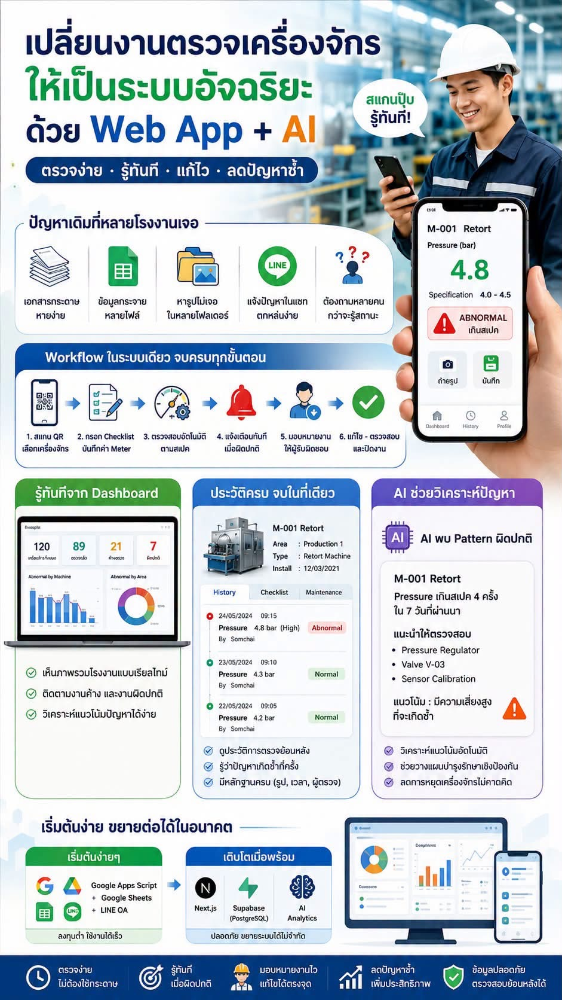

Smart Inspection for Factory Teams
งานตรวจเครื่อง
ครบในระบบเดียว
บันทึกค่ามิเตอร์ แนบรูป ดูแนวโน้ม สร้าง Work Order และเก็บทุกอย่างใน Google Sheets ของคุณเอง

สิ่งที่ได้รับ
Dashboard พร้อมใช้
KPI, กราฟแนวโน้ม และรายการตรวจล่าสุดแบบ responsive
Google-owned data
ข้อมูลและรูปภาพอยู่ใน Google Drive ของผู้ซื้อ ไม่ผูกกับ server ของผู้ขาย
Smart Insights
วิเคราะห์ pattern แบบ rule-based พร้อมสร้าง Work Order โดยไม่มีค่า AI API
Source code
ปรับแบรนด์ รายการเครื่อง และเกณฑ์มาตรฐานได้
คู่มือและไลเซนส์
มีคู่มือติดตั้ง เช็กลิสต์ส่งมอบ และ Commercial License template
Auto update
รองรับ GitHub Actions เพื่อทดสอบและ deploy ทุกครั้งที่อัปเดต main
ติดตั้งใน 4 ขั้นตอน
สร้าง Apps Script
สร้างโปรเจกต์ในบัญชี Google ของผู้ใช้งาน
อัปโหลดไฟล์
ใช้ clasp push เพื่อนำ source code เข้าโปรเจกต์
สร้างฐานข้อมูล
รัน setupInspectionSystem หนึ่งครั้งเพื่อสร้าง Sheets และ Drive
พร้อมปรับให้เข้ากับโรงงานของคุณ
แก้ชื่อเครื่องจักร พื้นที่ ค่า Min/Max ผู้ตรวจ และอีเมลแจ้งเตือนได้จาก Google Sheets โดยตรง
เปิดระบบตัวอย่าง